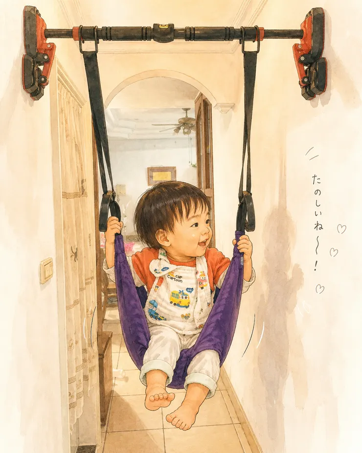

社區健身房什麼都有，就是少了一支我最愛的單槓。於是我興沖沖買了一組號稱「超穩固」的壁掛單槓。原本以為從此可以在家練引體向上。沒想到安裝完成十分鐘後，它就變成了龍弟弟的盪鞦韆...
身為一個中年爸爸，雞爸爸最近做了一件很熱血的事，我在家裡走廊裝了一支單槓。當初下單時腦海裡的畫面是：每天清晨六點陽光灑落，雞爸爸雙手拉著單槓，只需要給我幾秒鐘的空檔，不用下樓、不怕下雨，在家就能訓練我的背闊肌和核心，想到就覺得很興奮。
結果現實並不是那麼簡單，現實中第一個「深度體驗」的使用者不是我，而是一個不到一百公分、只會講兩個字的小傢伙。沒錯，是龍弟弟，一個一歲小孩跟爸爸搶著玩單槓勒～
才研究完說明書、裝好單槓，龍弟弟就指著旁邊附贈的紫色吊帶：「開～」。雞爸爸稍微研究了一下說明書，裝上去才知道，那不是什麼護腰帶，而是一組兒童吊床。
於是，十分鐘後，健身器材就完成了它的第一次功能轉型。從單槓，變成盪鞦韆。

買來的東西，最後都會變成小孩的
如果你是家長，大概都懂這種感覺。
買平板，最後是給孩子看卡通的。買沙發，最後是給貓睡的。
只是沒想到買單槓…原來是幫小朋友買盪鞦韆。
龍弟弟坐進紫色吊床裡，雙手抓著兩旁的把手，晃來晃去。
走廊，瞬間變成小型遊樂園，而我就站在旁邊負責推，像位沒有薪水的遊樂園工作人員。
大人的健身，小孩的快樂
有趣的是，這吊床其實設計得很聰明。小朋友坐進去時，可以抓著兩旁手把保持平衡。身體被柔軟布料包覆著，安全感很高。前後擺盪時，既像盪鞦韆，又有點像被抱在懷裡。
難怪龍弟弟第一次坐上去就一直喊：「還要」。
後來我查了一下才知道，這類吊床原本還有許多用途：
- 兒童感統訓練
- 空中瑜珈
- 身體伸展
- 平衡感練習
甚至連大人都能坐進去放鬆腰背。只是對龍弟弟來說，它唯一的用途只有一個：「好玩。」
孩子的笑聲 才是最棒的紓壓
現在還只會說兩個字的龍弟弟，總是用眼神告訴我：「再高一點！」「再來一次！」現在我看著那支單槓，心裡總笑著，你帶來的第一個成果，想不到居然是孩子的笑聲。
單槓不是我想像中的樣子，但好像變成了更好的樣子
以前當直男買東西總是功能導向，想拉單槓就應該買個單槓來拉，想要吊床就買吊床。
有了孩子之後，很多東西都會意外走出新的走向。譬如單槓變成盪鞦韆、紙箱變成秘密基地、棉被變成搭帳棚...。當然想鍛鍊身體的爸爸，也會變成推鞦韆的人。
不過這支單槓，大概是我今年買過最划算的親子玩具。
不但可以「親子共玩」，而且CP值爆表只要一張「小朋友」。